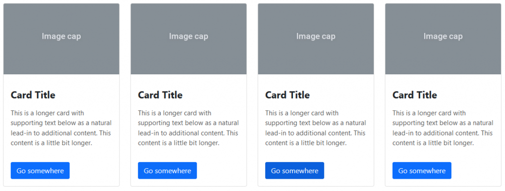
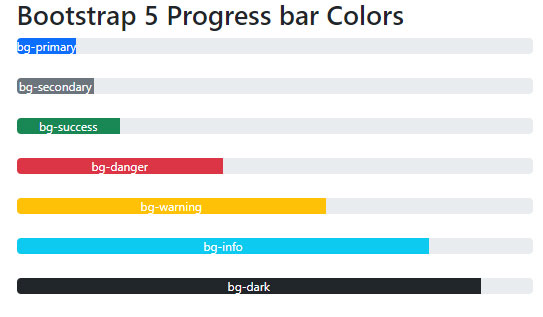

Página 2
Esta es la segunda pagina y aqui hablaremos de otros dos componentes de Bootstrap
Las tarjetas son contenedores flexibles que permiten organizar contenido como imágenes, texto, enlaces y botones de manera estructurada. Se utilizan para presentar información agrupada, como productos, perfiles de usuario o noticias.
La barra de carga representa visualmente el progreso de una tarea en ejecución, como la carga de archivos o el avance de un formulario. Se puede personalizar con diferentes colores y animaciones para mejorar la experiencia del usuario. En la tercera imagen podemos ver una combinacion de como se puede usar una tarjeta con una barra de carga


